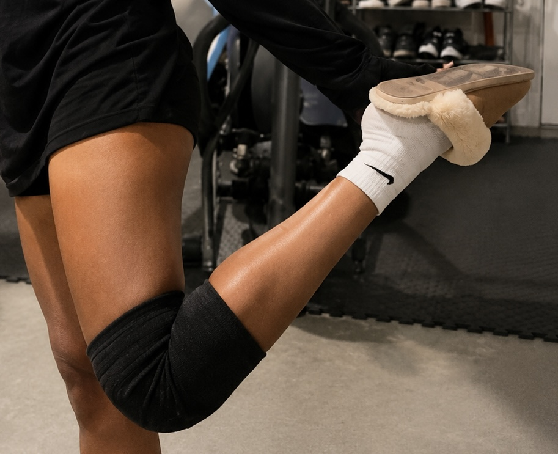
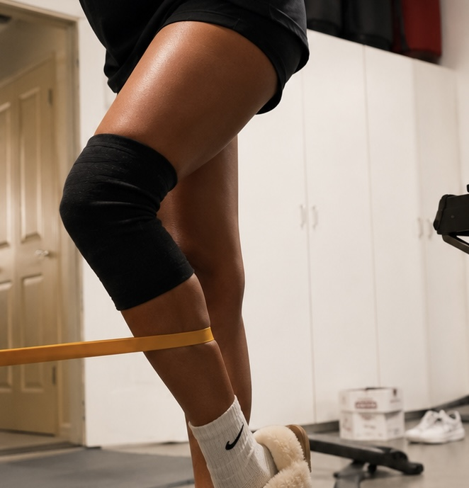

Building the Foundation
Summary: Before surgery, I committed myself to ACL pre-habilitation through physical therapy and daily rehabilitation. Those weeks became the foundation of my recovery and taught me that the work you do before surgery can be just as important as the recovery afterward.
My pre-hab journey began shortly after I was diagnosed with a full-thickness, grade 3 ACL tear. Learning that surgery would be necessary was difficult enough, but hearing that playing my upcoming freshman badminton season was no longer considered a safe option made it even harder to accept. Instead of focusing only on what I had lost, I shifted my attention toward preparing my knee as much as possible before surgery.
Starting Physical Therapy
I attended physical therapy twice each week. Every appointment began with an evaluation of my knee followed by manual therapy to loosen my quad and calf muscles before moving into rehabilitation exercises. Most sessions lasted about an hour and focused on improving knee stability, restoring range of motion, and rebuilding strength.
The exercises included single-leg balance, mini squats, bridges, lunges as my knee became stronger, and daily work on regaining full knee extension. My physical therapist explained that restoring extension before surgery was one of the most important goals because it would make the recovery after ACL reconstruction much smoother.
Pre-Hab Progress
Mobility work and strength training before ACL reconstruction.

Knee Flexion Progress
Working to restore mobility and improve how far I could comfortably bend my knee before surgery.

Strength and Stability
Using controlled resistance-band exercises to strengthen my leg and prepare for surgery.
Taking Ownership of My Recovery
Although physical therapy gave me a strong foundation, I quickly realized that two sessions each week would not be enough on their own. I became fully committed to my rehabilitation outside of the clinic. Every day, I completed my home exercises, repeated movements I had learned in therapy, and carefully added additional exercises that challenged my strength, balance, and stability without causing unnecessary pain.
As I became stronger, I also began incorporating movements that related more closely to badminton. Exercises like heel taps from an elevated surface and lateral band walks helped improve my balance, control, and side-to-side movement. The more consistent I became, the more progress I noticed. My knee gradually became stronger, my movements became smoother, and my confidence steadily increased.
Motivation to Return
My biggest source of motivation throughout pre-hab was badminton. My season was only a few weeks away, and although my doctors explained that surgery would be the safest long-term option, I wasn't ready to accept that my freshman season was already over.
I attended open gyms to carefully see how my knee responded. The first time back, my confidence was extremely low. Every movement felt uncertain, and I worried that my knee would give out at any moment. My coach noticed how hesitant I was and suggested that sitting out the upcoming season would be the safest decision.
Even though I understood why, I wasn't ready to give up. That conversation became motivation rather than discouragement. I became even more consistent with my rehabilitation, determined to give myself the best chance possible if I ever hoped to return. Looking back, I now understand that my determination wasn't just helping me prepare for badminton—it was preparing me for the much longer recovery that was still ahead.
Seeing Progress
Over the following weeks, I noticed significant improvements. I regained full knee extension, my quad activation improved dramatically, and I eventually progressed to controlled mini hops and side shuffles. My movements became smoother, my balance improved, and for the first time since the injury, I felt like I was moving like an athlete again.
The progress surprised not only me, but also my parents, coaches, and physical therapist. Every improvement reminded me that recovery isn't built through one great workout or one successful therapy session. It is built through hundreds of small decisions to keep showing up and doing the work.
Why Pre-Hab Matters
Throughout this process, my doctors explained that ACL pre-habilitation plays an important role in recovery after ACL reconstruction. Restoring range of motion, reducing swelling, improving quad activation, and strengthening the muscles surrounding the knee before surgery often leads to better outcomes during post-operative rehabilitation.
At the time, I viewed pre-hab as something I simply had to complete before surgery. Looking back, I now understand that it became the foundation for everything that followed. It taught me how to stay disciplined, how to trust the rehabilitation process, and how much influence I could have over my own recovery.
Reflection
The biggest lesson I learned during pre-hab was that consistency creates progress. Every exercise, every therapy session, and every day of rehabilitation mattered. Progress wasn't immediate, but it was measurable, and that kept me moving forward.
Looking back, my determination to return to badminton gave me the motivation to push myself every day. Although surgery ultimately remained the right decision, the work I put in before surgery gave me a stronger body, a stronger mindset, and a much better starting point for the long recovery that followed.
“Recovery is built through hundreds of small decisions to keep showing up.”